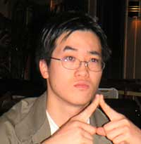

...making Linux just a little more fun!

David Chong is a final year student at RMIT University in Melbourne
Australia. Nearing completion of a double degree in Computer Systems
Engineering and Business Administration, his interest in Linux,
microprocessors and integrated circuit was not apparent until about his 3rd
year at the university. Prompted by his senior lecturer, P.J. Radcliffe (also an author of LG)
whose relentless enthusiasm for Linux and electronics revealed how robust
and powerful the Linux operating system can be. Also a 12-week vacation employment at ANSTO at Lucas Height, NSW
introduced me to the wonderful world of microprocessors and their amazing
applications. Excited about entering into the workforce and working on some large-scale
projects, David is also interested in Wing Chun Kung Fu and music, in particular
the guitar, and hopes to create a rock band one day.